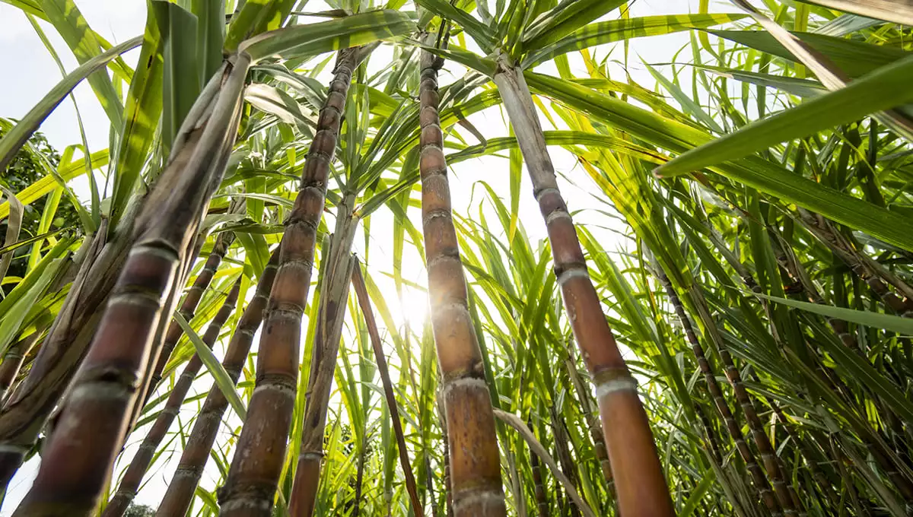
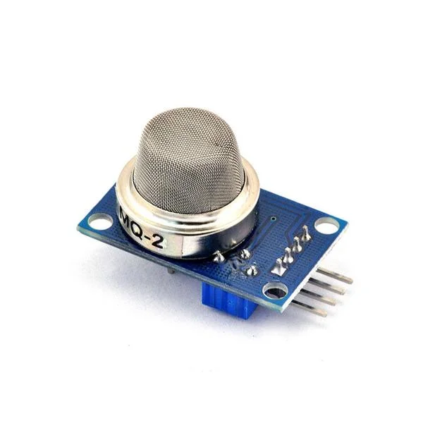
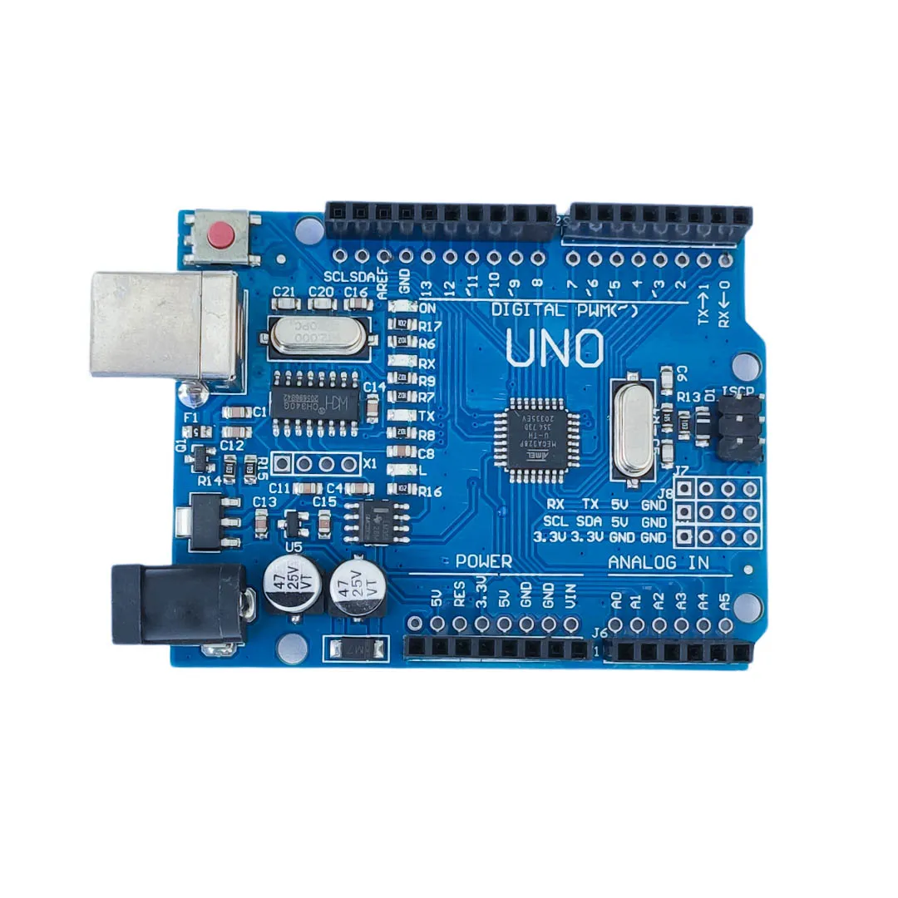
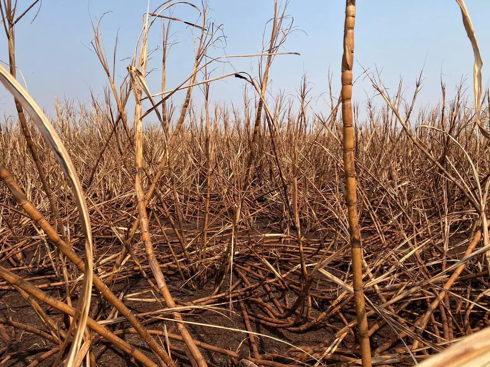

Como o sistema funciona:
A liberação de gás acontece
Quando a temperatura no canavial sobe — seja pelo sol intenso, por pontos de calor ou por material em decomposição — a cana começa a liberar metano (CH₄) e monóxido de carbono (CO). Esses gases aparecem antes das chamas, criando uma janela de tempo para agir.

Sensor MQ-2 capta os gases da cana
O MQ-2 é sensível exatamente aos gases que a cana emite sob calor: metano, CO, fumaça e GLP. Posicionado no canavial, ele monitora o ar continuamente e converte a concentração detectada em um sinal elétrico analógico.

Arduino Uno processa e avalia
O Arduino Uno recebe o sinal do sensor, converte em ppm e compara com os limites definidos no código: abaixo de 300 ppm é normal, entre 300 e 600 ppm é atenção, acima de 600 ppm é crítico. Tudo isso acontece em tempo real.

Alerta é disparado no monitoramento
No nível de gás de risco, o sistema aciona o alerta. O LED muda de cor conforme o nível de concentração, o buzzer soa e os dados são enviados ao dashboard em tempo real, indicando o ponto de risco no mapa.

Dado registrado
Cada leitura dos gases da cana é salva com horário e valor no banco de dados, formando um histórico visualizável no dashboard. Isso permite identificar padrões — como horários do dia em que a concentração sobe mais — e antecipar riscos futuros com base nos dados coletados.